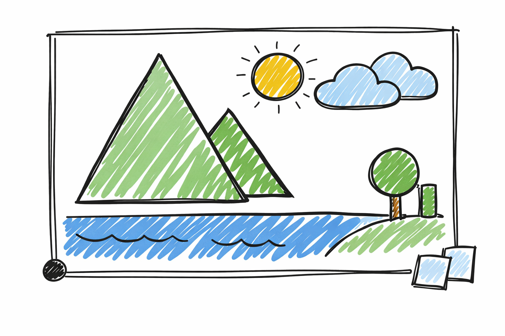
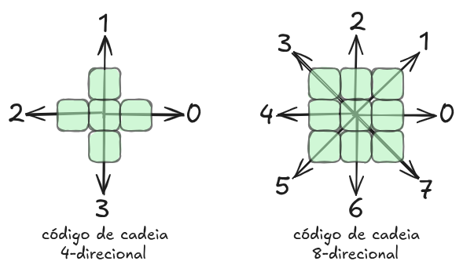
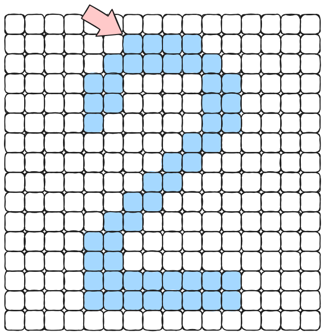
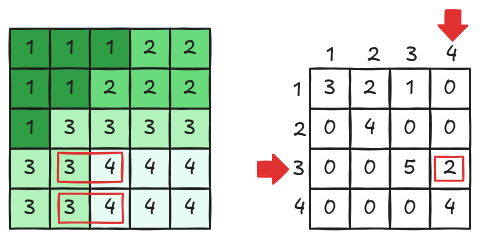
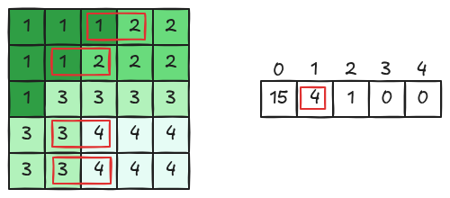

9 Representação e Descrição de Imagens

Após a etapa de segmentação, em que a imagem é particionada em regiões de interesse, inicia-se uma fase fundamental no processamento digital de imagens: a representação e descrição dessas regiões. Nesse momento, os conjuntos de pixels identificados deixam de ser apenas agrupamentos e passam a ser organizados em formatos que permitam sua análise, interpretação e uso em etapas posteriores, como reconhecimento de padrões e classificação.
A representação de uma região pode ser realizada de duas formas principais, dependendo do tipo de informação que se deseja extrair:
Características externas (fronteira): Nesse caso, a região é descrita a partir de seus contornos. Essa abordagem é especialmente útil quando o interesse está na forma ou na geometria do objeto, como em aplicações de reconhecimento de objetos, análise de silhuetas ou identificação de estruturas.
Características internas (região): Aqui, considera-se o conjunto de pixels que compõem a região. Essa forma de representação é mais adequada quando o foco está em propriedades como cor, textura ou intensidade, sendo amplamente utilizada em tarefas de análise de superfícies e classificação baseada em atributos internos.
Uma vez definida a forma de representação, a etapa seguinte consiste na descrição da região. Nessa fase, são extraídas medidas quantitativas — também chamadas de descritores — que sintetizam as características relevantes do objeto. Esses descritores podem incluir informações como área, perímetro, momentos, compacidade, histogramas de intensidade, entre outros.
Assim, a representação fornece a estrutura necessária para organizar os dados da região, enquanto a descrição transforma essa estrutura em informações úteis e comparáveis, permitindo que o sistema tome decisões de forma automática e eficiente.
Na etapa de descrição, é fundamental que as características escolhidas como descritores sejam robustas frente a variações comuns que podem ocorrer na imagem. Entre essas variações estão mudanças de escala (tamanho), rotação e translação (posição) do objeto. Em outras palavras, bons descritores devem representar o objeto de forma consistente, independentemente de como ele aparece na imagem. Essa propriedade é essencial para garantir que o mesmo objeto seja reconhecido corretamente em diferentes condições.
A representação e a descrição de formas constituem etapas essenciais no processamento digital de imagens, pois permitem transformar objetos visuais em estruturas organizadas e em conjuntos de características que podem ser analisadas computacionalmente. Para isso, existe um conjunto de técnicas consolidadas, cada uma com abordagens e objetivos específicos, que buscam capturar diferentes aspectos das formas presentes nas imagens.
Uma das estratégias mais clássicas é o código de cadeia, que representa o contorno de um objeto como uma sequência de direções discretas. Essa abordagem é simples e eficiente, sendo especialmente útil para descrever a geometria do contorno de maneira compacta, além de preservar a conectividade entre os pontos.
A aproximação poligonal é outra técnica importante, que consiste em simplificar o contorno de uma forma por meio de segmentos de reta. Ao reduzir o número de pontos necessários para representar o objeto, essa abordagem diminui a complexidade dos dados, mantendo apenas os elementos mais relevantes da estrutura geométrica.
As assinaturas de forma representam o contorno por meio de funções unidimensionais, como a distância entre o centroide e a borda em função do ângulo. Essa técnica facilita a análise e a comparação entre formas, pois transforma uma estrutura bidimensional em um vetor ou função que pode ser facilmente manipulado.
A esqueletização (ou skeletonization) busca representar a forma a partir de seu eixo central, preservando a topologia do objeto. O esqueleto reduz a forma a uma estrutura mais simples, composta por linhas finas que mantêm a conectividade e a estrutura global, sendo útil em aplicações como reconhecimento de padrões e análise estrutural.
Além das abordagens baseadas no contorno, existem os descritores de região, que consideram as propriedades internas do objeto, como área, momentos, intensidade e distribuição espacial dos pixels. Esses descritores fornecem uma visão mais global da forma, sendo menos sensíveis a pequenas variações na borda.
Por fim, a análise de textura complementa a descrição ao capturar padrões de variação de intensidade dentro da região. Técnicas como matrizes de coocorrência e filtros permitem identificar características como regularidade, rugosidade e orientação, sendo fundamentais para diferenciar regiões com aparência semelhante, mas com estruturas internas distintas.
9.1 Código de Cadeia
O código de cadeia (chain code) é uma técnica clássica para representação de fronteiras em imagens binárias. Ele descreve o contorno de um objeto por meio de uma sequência de direções, obtida ao percorrer, de forma ordenada, os pixels que compõem sua borda. Essa abordagem permite transformar uma estrutura bidimensional (a forma do objeto) em uma representação unidimensional (uma sequência numérica), facilitando a análise e comparação de formas.
Representação direcional

A construção do código de cadeia baseia-se na definição de uma vizinhança entre pixels. Existem duas formas principais (conforme ilustrado na Figura 9.1):
- Código de cadeia 4-direcional: considera apenas os vizinhos nas direções horizontal e vertical.
- Código de cadeia 8-direcional: inclui também as direções diagonais, permitindo uma representação mais fiel da geometria da fronteira.
No caso 8-direcional, cada movimento entre pixels adjacentes é representado por um número de 0 a 7, indicando a direção do deslocamento. Assim, ao percorrer o contorno de um objeto, obtém-se uma sequência de números que descreve completamente sua forma.
Exemplo de código de cadeia

Considere um objeto cuja fronteira foi percorrida a partir de um pixel inicial (indicado por uma seta na Figura 9.2). O código de cadeia obtido pode ser representado por uma sequência como:
000077665555556600000006444444442221111112234445652211Cada dígito dessa sequência indica a direção do próximo passo ao longo do contorno. Dessa forma, toda a geometria da borda do objeto é codificada em uma única cadeia de valores inteiros.
Dependência do ponto inicial
Uma característica importante do código de cadeia é que ele depende do ponto inicial escolhido para iniciar o rastreamento do contorno. Diferentes pontos de partida podem gerar sequências distintas para o mesmo objeto, embora todas representem a mesma forma.
Para contornar esse problema, pode-se realizar uma normalização do código da cadeia. Uma abordagem comum consiste em considerar todas as rotações possíveis da sequência e selecionar aquela que corresponde ao menor valor inteiro (interpretação lexicográfica). Aplicando esse procedimento ao exemplo anterior, obtém-se:
000000064444444422211111122344456522110000776655555566Essa forma normalizada torna o descritor invariante à escolha do ponto inicial, permitindo comparações mais robustas entre diferentes objetos.
Algoritmo de Rastreamento de Contorno (Chain Code)
O código de cadeia é construído a partir de um contorno. O algoritmo de rastreamento de contorno (da Listagem 9.1) tem como objetivo percorrer a fronteira de um objeto binário, identificando todos os pixels pertencentes ao seu contorno de forma ordenada. A seguir, apresenta-se uma versão estruturada e detalhada do procedimento:
Algoritmo RastreamentoContorno(I, C)
Entrada: imagem binária I[altura][largura]
Saída: lista de pontos do contorno C
/* Passo 1 — Encontrar ponto inicial b0 */
encontrado = 0;
for (y = 0; y < altura; y++) {
for (x = 0; x < largura; x++) {
if (I[y][x] == 1) {
b0 = (x, y);
encontrado = 1;
break;
}
}
if (encontrado == 1)
break;
}
/* Definir vizinho inicial (oeste) */
c0 = (b0.x - 1, b0.y);
/* Encontrar b1 */
b = b0; c = c0;
for (k = 0; k < 8; k++) {
/* vizinhos no sentido horário a partir de c */
nk = vizinho8(b, c, k);
if (I[nk.y][nk.x] == 1) {
b1 = nk;
c1 = vizinhoAnterior(b, nk);
break;
}
}
/* Inicialização */
b = b1; c = c1;
adicionar b0 e b1 à lista C;
/* Passos 3–5 — Rastreamento */
while (b != b0 || prox != b1) {
for (k = 0; k < 8; k++) {
nk = vizinho8(b, c, k);
if (I[nk.y][nk.x] == 1) {
prox = nk;
ant = vizinhoAnterior(b, nk);
break;
}
}
b = prox;
c = ant;
adicionar b à lista C;
}
/* Resultado */
retornar C;O exemplo interativo seguinte apresenta uma simulação desse algoritmo. A cada passo são apresentados os pixels do contorno que são visitados, o valor de k (direção) e o código de cadeia.
9.2 Aproximação Poligonal
A aproximação poligonal é uma estratégia amplamente utilizada no processamento e análise de imagens para representar formas complexas por meio de uma sequência reduzida de segmentos de reta. Essa abordagem consiste em substituir um contorno detalhado — geralmente composto por muitos pontos — por um polígono que preserva suas características essenciais, ao mesmo tempo em que reduz significativamente a quantidade de dados necessários para sua descrição.
Conceito Geral
Considere uma borda extraída de uma imagem (por exemplo, após um processo de segmentação). Essa borda é tipicamente representada como uma lista ordenada de pontos. A aproximação poligonal busca selecionar um subconjunto desses pontos, chamados vértices dominantes, de modo que a conexão entre eles forme uma representação simplificada da forma original.
Essa simplificação deve equilibrar dois objetivos principais:
- Redução de complexidade: diminuir o número de pontos necessários para representar a forma;
- Fidelidade geométrica: manter a forma resultante o mais próxima possível da original.
Principais Métodos
Diversos algoritmos podem ser utilizados para realizar a aproximação poligonal. Entre os mais conhecidos, destaca-se o Algoritmo de Douglas-Peucker.
Algoritmo de Douglas-Peucker
Este é um dos métodos mais populares. O procedimento é recursivo:
- Conecta-se o primeiro e o último ponto do contorno com um segmento de reta;
- Encontra-se o ponto intermediário mais distante dessa reta;
- Se a distância for maior que um limiar \(\varepsilon\), o ponto é mantido e o processo é repetido para os dois subsegmentos;
- Caso contrário, todos os pontos intermediários são descartados.
Esse algoritmo permite um controle direto do erro máximo permitido.
O exemplo interativo seguinte ilustra esse procedimento.
Critérios de Qualidade
A avaliação de uma aproximação poligonal baseia-se em critérios que buscam equilibrar a qualidade da representação com a eficiência computacional. Um dos principais aspectos considerados é o erro de aproximação, que mede o quanto o polígono simplificado se afasta do contorno original. Esse erro pode ser definido, por exemplo, como a distância máxima ou média entre os pontos do contorno original e os segmentos do polígono. Quanto menor esse erro, maior a fidelidade da representação, o que é especialmente importante em aplicações que exigem alta precisão geométrica.
Outro fator relevante é o número de vértices utilizados na representação. A redução da quantidade de pontos é justamente um dos objetivos centrais da aproximação poligonal, pois impacta diretamente na eficiência de armazenamento, transmissão e processamento dos dados. No entanto, uma simplificação excessiva — com poucos vértices — pode comprometer significativamente a forma original, eliminando detalhes importantes. Assim, é necessário encontrar um número adequado de vértices que permita representar a forma de maneira compacta, mas ainda informativa.
Além disso, deve-se considerar a preservação de características geométricas relevantes, como cantos, concavidades e convexidades. Esses elementos frequentemente carregam informações essenciais sobre a estrutura da forma e são fundamentais em tarefas como reconhecimento de objetos e análise de padrões. Uma boa aproximação poligonal deve garantir que essas características sejam mantidas, mesmo que outros detalhes menos significativos sejam descartados.
Dessa forma, observa-se que existe sempre um compromisso entre simplicidade e precisão. Representações mais simples tendem a ser mais eficientes, porém menos fiéis, enquanto representações mais detalhadas aumentam a precisão ao custo de maior complexidade. A escolha do nível de aproximação ideal depende, portanto, dos requisitos específicos da aplicação em questão, exigindo um equilíbrio cuidadoso entre esses dois objetivos.
Aplicações
A aproximação poligonal é utilizada em diversas áreas do processamento de imagens e visão computacional:
- Compressão de formas: reduz a quantidade de dados armazenados;
- Reconhecimento de padrões: facilita a comparação entre objetos;
- Extração de características: identificação de vértices, ângulos e segmentos;
- Modelagem geométrica: representação de objetos em sistemas gráficos.
Considerações Práticas
Na prática, a escolha do método de aproximação poligonal e de seus parâmetros — em especial o limiar \(\varepsilon\) — está diretamente relacionada à finalidade da aplicação. Esse parâmetro controla o grau máximo de desvio permitido entre o contorno original e a representação simplificada, influenciando de forma decisiva o resultado final. Assim, diferentes contextos exigem diferentes configurações, dependendo do nível de detalhe necessário e das restrições de processamento.
Quando se utilizam valores pequenos de \(\varepsilon\), a aproximação tende a ser mais fiel ao contorno original, preservando melhor suas variações e detalhes geométricos. Nesse caso, um maior número de vértices é mantido, o que resulta em uma representação mais precisa, porém mais complexa. Por outro lado, ao adotar valores maiores de \(\varepsilon\), o algoritmo permite desvios mais significativos, o que leva a uma simplificação mais agressiva do contorno. Consequentemente, o número de vértices diminui, tornando a representação mais compacta, porém com perda de precisão.
Além da escolha do parâmetro \(\varepsilon\), é importante considerar a influência de ruídos presentes no contorno. Irregularidades decorrentes de processos de aquisição ou segmentação podem introduzir variações indesejadas que afetam negativamente a aproximação poligonal, levando à preservação de pontos irrelevantes ou à distorção da forma simplificada. Por essa razão, é comum aplicar previamente técnicas de suavização, como filtros ou operações morfológicas, com o objetivo de reduzir esses ruídos e obter uma representação mais estável e coerente do contorno antes da simplificação.
9.3 Assinatura da forma
A assinatura da forma é uma técnica de representação amplamente utilizada no processamento digital de imagens para descrever contornos de objetos de maneira compacta e informativa. Em vez de armazenar todos os pontos do contorno — o que pode ser redundante e custoso — a assinatura transforma a forma em uma função unidimensional, geralmente definida em termos de um parâmetro angular. Essa abordagem reduz a complexidade da representação, ao mesmo tempo em que preserva características essenciais da geometria do objeto.
Uma das formas mais comuns de definir a assinatura consiste em considerar a distância entre um ponto de referência interno — tipicamente o centroide — e os pontos do contorno, em função do ângulo $ $. Assim, obtém-se uma função $ r() $, que indica o raio da forma em cada direção. Essa representação permite capturar variações na forma de maneira contínua: regiões mais distantes do centro resultam em valores maiores de $ r() $, enquanto regiões mais próximas produzem valores menores. Dessa forma, o comportamento da função reflete diretamente a estrutura geométrica do objeto.
A assinatura da forma possui propriedades importantes que a tornam especialmente útil em aplicações de análise e reconhecimento. Por exemplo, a periodicidade da função está relacionada à simetria da forma, enquanto picos e vales indicam a presença de vértices, concavidades ou convexidades. Além disso, a assinatura pode ser normalizada para obter invariância a transformações como translação, escala e rotação, o que é fundamental em sistemas de reconhecimento de padrões, onde diferentes instâncias de um mesmo objeto podem aparecer em posições e tamanhos variados.
Outra vantagem significativa dessa técnica é a facilidade de comparação entre formas. Como a assinatura é representada por uma função ou vetor de valores, torna-se possível aplicar métricas simples — como distância euclidiana ou correlação — para medir a similaridade entre objetos. Isso simplifica tarefas como classificação, agrupamento e recuperação de imagens com base em conteúdo.
Apesar de suas vantagens, a qualidade da assinatura depende diretamente da precisão na extração do contorno e da escolha adequada do ponto de referência. Ruídos, falhas na segmentação ou contornos incompletos podem comprometer a representação, gerando assinaturas instáveis ou distorcidas. Por isso, é comum empregar técnicas de pré-processamento, como suavização e detecção robusta de bordas, para garantir resultados mais confiáveis.
Em síntese, a assinatura da forma constitui uma ferramenta eficiente e intuitiva para a descrição de objetos em imagens digitais. Ao converter uma estrutura bidimensional complexa em uma representação unidimensional significativa, ela facilita tanto a análise quanto a comparação de formas, sendo amplamente empregada em diversas aplicações de visão computacional.
O exemplo interativo seguinte ilustra esta estratégia. A partir do contorno da imagem evidenciado pelo filtro de sobel e uma limiarização (que pode ser ajustada), é gerado o gráfico de assinatura do contorno.
9.4 Esqueletização
A esqueletização é uma técnica de representação de formas que busca reduzir uma região a uma estrutura central, fina e conectada, preservando sua topologia e características essenciais. O resultado, conhecido como esqueleto (skeleton), pode ser interpretado como o conjunto de pontos equidistantes das bordas do objeto, funcionando como um eixo medial que descreve sua estrutura interna. Essa representação é especialmente útil por manter informações importantes, como conectividade e ramificações, ao mesmo tempo em que reduz significativamente a quantidade de dados. No contexto deste capítulo, a esqueletização pode ser relacionada diretamente à abordagem apresentada na morfologia matemática por meio da operação de afinamento morfológico (thinning). O afinamento consiste na remoção iterativa de pixels da borda, sob condições específicas, até que a forma seja reduzida a linhas de espessura unitária, sem quebrar sua conectividade. Dessa forma, o esqueleto obtido por afinamento pode ser visto como uma implementação prática da esqueletização, destacando como operações morfológicas fornecem uma base sólida e eficiente para a representação estrutural de formas em imagens digitais.
9.5 Descritores de Região
Os descritores de regiões constituem uma classe importante de técnicas no processamento digital de imagens voltadas à caracterização de objetos a partir de suas áreas internas, e não apenas de seus contornos. Diferentemente dos descritores de borda, que se concentram na forma externa, os descritores de regiões exploram propriedades globais e estatísticas dos pixels que compõem o interior de uma região segmentada, permitindo uma representação mais completa e robusta do objeto.
Uma das características fundamentais dos descritores de regiões é sua capacidade de capturar propriedades geométricas globais, como área, perímetro, compacidade, excentricidade e orientação. A área, por exemplo, corresponde ao número de pixels pertencentes à região, enquanto a compacidade relaciona área e perímetro para indicar o quão “compacta” ou irregular é a forma. Já a excentricidade fornece uma medida do alongamento do objeto, sendo útil para diferenciar formas circulares de formas alongadas. Esses atributos são amplamente utilizados em tarefas de classificação e reconhecimento de padrões.
Além das propriedades geométricas, os descritores de regiões também podem incorporar informações estatísticas de intensidade, como média, variância e histogramas de níveis de cinza ou de cores. Esses descritores são particularmente úteis quando diferentes objetos apresentam formas semelhantes, mas diferem em textura ou tonalidade. Por exemplo, duas regiões com formatos parecidos podem ser distinguidas por suas distribuições de intensidade, o que amplia o poder discriminativo da representação.
Outro grupo relevante são os momentos de região, que fornecem uma descrição mais sofisticada da distribuição espacial dos pixels. Momentos geométricos e momentos invariantes (como os momentos de Hu) são amplamente utilizados por sua capacidade de representar a forma de maneira compacta e, ao mesmo tempo, invariantes a transformações como translação, rotação e escala. Isso os torna extremamente úteis em aplicações onde os objetos podem aparecer em diferentes posições e orientações. O momento de ordem \((p,q)\), por exemplo, é definido como:
\[ m_{pq} = \sum_x \sum_y x^p y^q f(x,y) \]
Uma vantagem significativa dos descritores de regiões é sua robustez a ruídos e pequenas irregularidades no contorno. Como essas técnicas consideram a região como um todo, pequenas variações na borda tendem a ter menor impacto na representação final, em comparação com métodos baseados exclusivamente no contorno. No entanto, essa abordagem também apresenta limitações: descritores de regiões podem não capturar detalhes finos da forma externa, o que pode ser relevante em determinadas aplicações.
Em síntese, os descritores de regiões oferecem uma forma rica e abrangente de representar objetos em imagens digitais, combinando informações geométricas, estatísticas e estruturais. Sua escolha e aplicação dependem do problema em questão, sendo frequentemente utilizados em conjunto com descritores de contorno para obter uma caracterização mais completa e eficiente das formas presentes na imagem.
9.6 Descritores de Textura
Os descritores de textura são técnicas utilizadas no processamento digital de imagens para caracterizar padrões de variação de intensidade ou cor em uma região. Diferentemente dos descritores de forma, que se concentram na geometria dos objetos, os descritores de textura capturam propriedades relacionadas à organização espacial dos pixels, como repetição, rugosidade, suavidade e regularidade. Essas características são fundamentais para distinguir regiões que possuem formas semelhantes, mas apresentam padrões internos distintos.
Uma das abordagens mais comuns para descrever textura baseia-se em métodos estatísticos, que analisam a distribuição e a relação entre os níveis de intensidade dos pixels. Entre esses métodos, destacam-se as matrizes de coocorrência de níveis de cinza (GLCM), que consideram a frequência com que pares de pixels com determinados valores ocorrem em posições relativas específicas. A partir dessas matrizes, podem ser extraídas medidas como contraste, homogeneidade, energia e entropia, que fornecem uma descrição quantitativa da textura presente na imagem.
Outra categoria importante envolve os descritores estruturais, que modelam a textura como a repetição de padrões elementares, chamados de primitivas ou texels. Nessa abordagem, busca-se identificar regularidades na disposição desses elementos, sendo particularmente útil em texturas altamente organizadas, como tecidos ou superfícies artificiais. Já os métodos baseados em filtros analisam a resposta da imagem a operadores específicos, como filtros de Gabor ou wavelets, permitindo capturar informações em diferentes escalas e orientações. Esses métodos são eficazes para identificar padrões direcionais e frequências espaciais características da textura.
Além disso, técnicas mais recentes incluem descritores como o Local Binary Pattern (LBP), que codifica a relação entre um pixel e seus vizinhos em uma representação binária simples e eficiente. Esse tipo de descritor tem se destacado por sua robustez a variações de iluminação e baixo custo computacional, sendo amplamente utilizado em aplicações práticas, como reconhecimento facial e análise de superfícies.
Os descritores de textura desempenham um papel essencial em diversas aplicações, como segmentação de imagens, classificação de materiais, reconhecimento de padrões e análise médica. Por exemplo, em imagens médicas, a textura pode ajudar a diferenciar tecidos saudáveis de tecidos patológicos. Em visão computacional, pode ser utilizada para identificar superfícies específicas, como madeira, metal ou vegetação.
Em síntese, os descritores de textura oferecem uma maneira eficaz de representar padrões complexos presentes nas imagens, complementando outras formas de descrição, como contorno e região. Ao capturar informações sobre a organização interna dos pixels, essas técnicas ampliam significativamente a capacidade de análise e interpretação de imagens digitais em diferentes contextos.
Matrizes de Coocorrência e Matriz de diferença
As matrizes de coocorrência e as matrizes de diferença são técnicas clássicas de descrição de textura que se baseiam na análise das relações espaciais entre os níveis de intensidade dos pixels. Diferentemente de métodos que consideram apenas estatísticas globais (como média e variância), essas abordagens capturam como os pixels se organizam em relação aos seus vizinhos, fornecendo uma representação mais rica da estrutura da textura.
Matriz de coocorrência
A matriz de coocorrência de níveis de cinza (GLCM – Gray Level Co-occurrence Matrix) descreve a frequência com que pares de pixels com determinados valores de intensidade ocorrem em uma posição relativa específica. Para construí-la, define-se um deslocamento espacial — por exemplo, um pixel à direita, acima ou em uma determinada direção e distância — e, em seguida, contabiliza-se quantas vezes um pixel com intensidade \(i\) ocorre ao lado de um pixel com intensidade \(j\). O resultado é uma matriz em que cada elemento \((i,j)\) representa essa frequência de coocorrência. A escolha da direção e da distância influencia diretamente o tipo de padrão capturado, permitindo analisar texturas com diferentes orientações e escalas.
A partir da matriz de coocorrência, podem ser extraídas diversas medidas estatísticas que caracterizam a textura. Entre as mais utilizadas estão o contraste, que indica a variação local de intensidade; a homogeneidade, que mede a proximidade dos valores em relação à diagonal da matriz; a energia, associada à uniformidade; e a entropia, que reflete o grau de desordem da textura. Essas medidas transformam a matriz em um vetor de características compacto, amplamente utilizado em tarefas de classificação e reconhecimento.

O exemplo apresentado na Figura 9.3 ilustra a construção de uma matriz de coocorrência de níveis de cinza (GLCM) a partir de uma pequena imagem quantizada em quatro níveis (1, 2, 3 e 4).
Inicialmente, observa-se a imagem original, onde cada pixel possui um valor discreto. Em seguida, define-se uma relação espacial — no caso do exemplo, considera-se um deslocamento (por exemplo, um pixel à direita). A partir disso, percorre-se a imagem e, para cada pixel, analisa-se o valor do seu vizinho na direção escolhida, formando pares ordenados do tipo ((i, j)), onde (i) é o valor do pixel de referência e (j) é o valor do vizinho.
Cada ocorrência desses pares é contabilizada em uma matriz (P(i,j)), na qual as linhas representam o valor do pixel de referência e as colunas representam o valor do pixel vizinho. Por exemplo, se um pixel com valor 3 tem um vizinho com valor 2, incrementa-se a posição (P(3,2)) da matriz. Esse processo é repetido para todos os pixels válidos da imagem.
Ao final, obtém-se a matriz de coocorrência, que expressa a frequência com que diferentes combinações de níveis de cinza ocorrem na imagem segundo a relação espacial definida. Essa matriz é fundamental para a extração de características de textura, pois captura padrões como uniformidade, contraste e repetição de intensidades na imagem.
Matriz de diferença
Por sua vez, a matriz de diferença (também conhecida como Gray Level Difference Matrix – GLDM) é uma variação conceitualmente mais simples. Em vez de considerar pares ordenados \((i,j)\), ela analisa a diferença absoluta de intensidade entre pixels vizinhos. Para um dado deslocamento, calcula-se \(|i - j|\) para cada par de pixels e contabiliza-se a frequência de cada valor de diferença. O resultado é um vetor ou matriz que descreve a distribuição dessas diferenças ao longo da imagem. Essa abordagem enfatiza diretamente o grau de variação local, sendo particularmente útil para distinguir texturas suaves (com pequenas diferenças) de texturas rugosas (com grandes variações).

O exemplo da matriz de diferença da Figura 9.4 apresenta uma alternativa à matriz de coocorrência para descrever relações espaciais entre níveis de cinza. Enquanto a matriz de coocorrência contabiliza pares ordenados ((i,j)), a matriz de diferença considera apenas o valor absoluto da diferença entre os níveis de cinza de pixels vizinhos.
No exemplo destacado, a região em vermelho indica um par de pixels vizinhos que está sendo analisado. A partir desses dois valores, calcula-se a diferença e incrementa-se a posição correspondente na matriz de diferença. Diferentemente da matriz de coocorrência, que é bidimensional, a matriz de diferença pode ser representada como um vetor (ou histograma), no qual cada posição \(D(d)\) armazena o número de ocorrências da diferença \(d\).
Esse procedimento é repetido para todos os pares de pixels válidos da imagem. Ao final, obtém-se uma distribuição das diferenças de intensidade, que fornece informações importantes sobre a textura da imagem. Por exemplo, imagens com regiões homogêneas tendem a apresentar maiores frequências para diferenças pequenas (próximas de zero), enquanto imagens com bordas e variações intensas apresentam maior dispersão nos valores de diferença.
Assim, a matriz de diferença constitui uma representação mais compacta da textura, sendo especialmente útil quando se deseja reduzir a complexidade da análise sem perder a informação essencial sobre variações locais de intensidade.
A principal diferença entre essas duas técnicas está no nível de detalhamento da representação. A matriz de coocorrência preserva a informação completa sobre as combinações de intensidades entre pares de pixels, oferecendo uma descrição mais rica, porém com maior custo computacional. Já a matriz de diferença simplifica essa relação ao focar apenas na magnitude da variação, resultando em uma representação mais compacta e eficiente, embora menos detalhada.
Em termos de aplicação, ambas as abordagens são amplamente utilizadas em segmentação, classificação de texturas e análise de imagens médicas e industriais. Muitas vezes, elas são empregadas de forma complementar: a GLCM fornece uma descrição detalhada das relações estruturais, enquanto a matriz de diferença destaca o comportamento das variações locais. Assim, juntas, contribuem para uma caracterização mais robusta e discriminativa das texturas presentes em imagens digitais.
O exemplo interativo seguinte tem como objetivo ilustrar, de forma visual e intuitiva, o processo de construção da matriz de coocorrência (GLCM) e da matriz de diferença a partir de uma imagem digital. Inicialmente, a imagem original é exibida juntamente com sua versão em tons de cinza quantizada, permitindo ao usuário observar como os valores contínuos de intensidade são convertidos em um número reduzido de níveis discretos.
A visualização da imagem quantizada permite compreender como os níveis de cinza são agrupados antes do cálculo das matrizes. Essa etapa reduz a complexidade do problema e torna viável a construção da matriz de coocorrência, que depende de um número limitado de níveis. Além disso, evidencia que tanto a GLCM quanto a matriz de diferença não operam diretamente sobre os valores originais da imagem, mas sim sobre uma representação simplificada, preservando apenas as variações estruturais mais relevantes.
A partir da imagem quantizada, o algoritmo percorre os pixels considerando uma relação espacial definida — neste exemplo, um deslocamento horizontal de um pixel. Para cada par de pixels vizinhos, são realizadas duas análises complementares. Na primeira, registra-se a ocorrência do par de níveis \((i, j)\), incrementando a posição correspondente na matriz de coocorrência. Essa matriz bidimensional expressa a frequência com que diferentes combinações de intensidades ocorrem na imagem, sendo particularmente útil para capturar padrões de textura, como repetição e orientação.
Na segunda análise, calcula-se a diferença absoluta entre os níveis dos pixels vizinhos, acumulando os resultados em um vetor unidimensional, conhecido como matriz de diferença. Essa representação sintetiza a informação de variação local de intensidade, destacando o grau de homogeneidade ou contraste presente na imagem. Diferenças pequenas indicam regiões uniformes, enquanto diferenças maiores estão associadas a bordas e transições abruptas.
A apresentação simultânea da imagem original, da imagem quantizada e das matrizes calculadas permite estabelecer uma relação direta entre a estrutura visual da imagem e os valores obtidos nas representações estatísticas. Dessa forma, o exemplo interativo não apenas demonstra o funcionamento dos algoritmos, mas também contribui para a compreensão conceitual de como descritores de textura são construídos a partir de relações espaciais locais.
9.7 Considerações Finais
A descrição e representação de imagens constituem etapas fundamentais no processamento digital de imagens e na visão computacional, pois permitem transformar dados visuais brutos em informações estruturadas e interpretáveis por sistemas computacionais. Enquanto a representação está relacionada à forma como a imagem é modelada internamente — por exemplo, como uma matriz de pixels, um conjunto de regiões segmentadas ou um contorno — a descrição refere-se à extração de características relevantes dessas representações, com o objetivo de facilitar tarefas como análise, reconhecimento e classificação.
A representação de imagens pode assumir diferentes formas, dependendo do nível de abstração desejado. Em um nível mais básico, a imagem é representada como uma matriz de intensidades (em tons de cinza) ou de valores RGB (em imagens coloridas). Em níveis mais avançados, podem ser utilizadas representações baseadas em bordas, regiões ou estruturas geométricas, como grafos ou polígonos. Essas formas de representação reduzem a complexidade dos dados e destacam informações mais relevantes para a aplicação, como a forma de objetos ou a organização espacial dos elementos na imagem.
A descrição, por sua vez, envolve a extração de atributos ou características a partir dessas representações. Esses descritores podem ser de diferentes naturezas, como descritores de forma (que capturam a geometria do objeto), descritores de região (que analisam propriedades internas, como área e intensidade) e descritores de textura (que caracterizam padrões de variação de intensidade). Técnicas como assinatura da forma, momentos invariantes, histogramas e matrizes de coocorrência são exemplos de ferramentas utilizadas nesse processo.
Um aspecto importante na descrição de imagens é a busca por invariância a transformações como translação, rotação e escala, além de robustez a ruídos e variações de iluminação. Essas propriedades são essenciais para garantir que objetos semelhantes sejam reconhecidos como equivalentes, mesmo quando aparecem sob diferentes condições. Para isso, muitas técnicas incluem etapas de normalização ou utilizam descritores matematicamente projetados para serem invariantes.
Em síntese, a representação e a descrição de imagens são processos complementares: a representação organiza os dados de forma adequada, enquanto a descrição extrai informações significativas a partir dessa organização. Juntas, essas etapas formam a base para sistemas mais complexos de análise de imagens, possibilitando aplicações como reconhecimento de padrões, segmentação automática, classificação de objetos e interpretação inteligente de cenas.